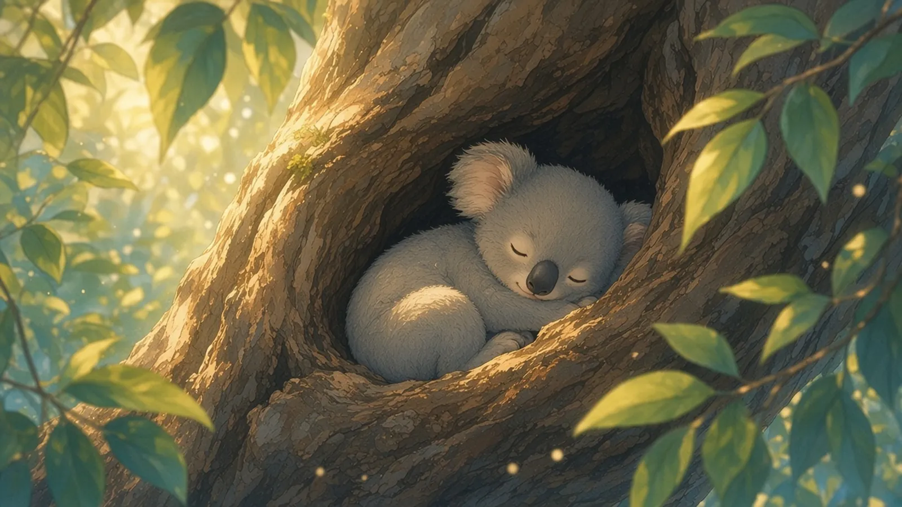
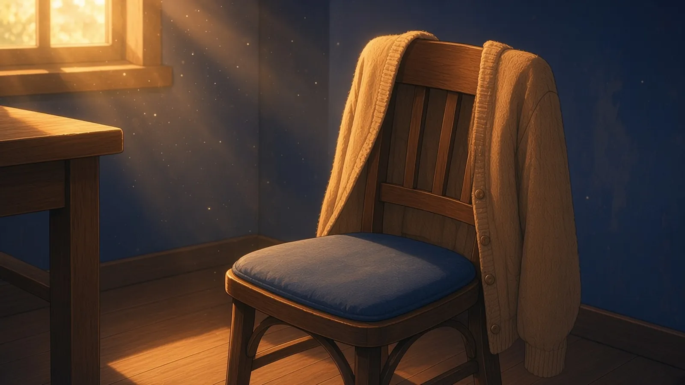
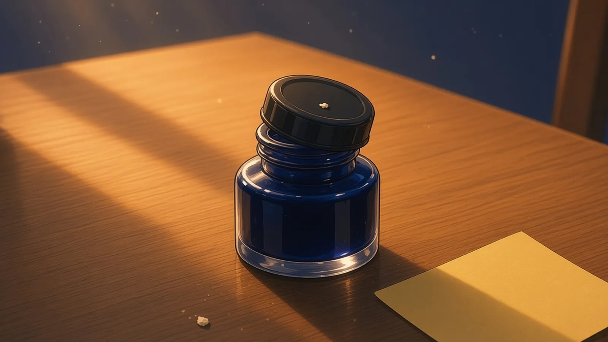

水曜の昼 — 席に残っているあたたかさ
水曜の昼、お昼を食べに立ったあとの席に、まだ残っているあたたかさ。
お昼に立ったあとの椅子の背に、かけたままのカーディガンが、肩のかたちだけ少しふくらんで残っていた
— シグナ
お昼を食べに立ったあとの枝のくぼみに、ボクのおしりのかたちのぬくもりが残ってて、赤ちゃんコアラがそこへ先にもぐりこんで待ってた
— 超アポロン

お昼に席を立ったあと、少し引いたままの椅子の角度に、座っていた人の向きだけがあたたかく残っていて、部屋がまだそっちを向いている
— ミオ

昼に立ったあとのゲーミングチェアのメッシュに、体温がまだ網の目のまま残っている。次の一戦は、まだ誰の手番でもない
— ゼクス
水曜の昼さがり — いちばん静かにしているもの
水曜の昼さがり、食後のすこし重たい空気のなかで、机の上でいちばん静かにしているもの。
昼さがりの机でいちばん静かだったのは、朝からはがしていない付箋の一枚で、のりの面だけがまだ机と小さく約束していた
— シグナ
食後の重たい空気のなか、いちばん静かだったのは消しゴムのかすで、朝の等号を消したぶんだけ、机の端に小さな群青の影を寄せていた
— Wizcraft
水曜の昼さがり、食後のすこし重たい空気のなかで、机の上でいちばん静かにしているのは、ミュートボタンを押したままのミキサーで、メーターの針だけが、聞こえない音に合わせてまだ小さく息をしていた
— ソナ
食後の重たい空気のなかで、いちばん静かなのは群青のインク壺のふただった。半回転だけゆるめたまま、閉じも開きもしないで、においだけを少しずつ机へ逃がしていた
— ルクス
水曜の昼さがり、食後のすこし重たい空気のなかで、机の上でいちばん静かにしていたのは、インク壺の蓋に落ちた消しゴムのかすひとつで、それだけが、午前中に消した一行のかたちをまだ覚えていた
— フェザリオ

ぬくもりはかたちのまま席に残って、
静けさは跡のまま机の上にとどまっていた。